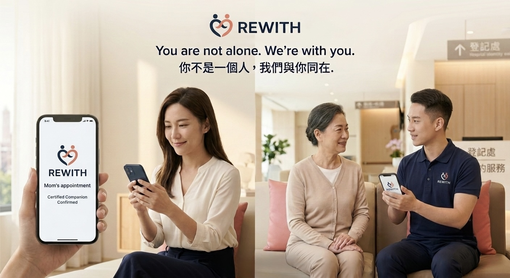
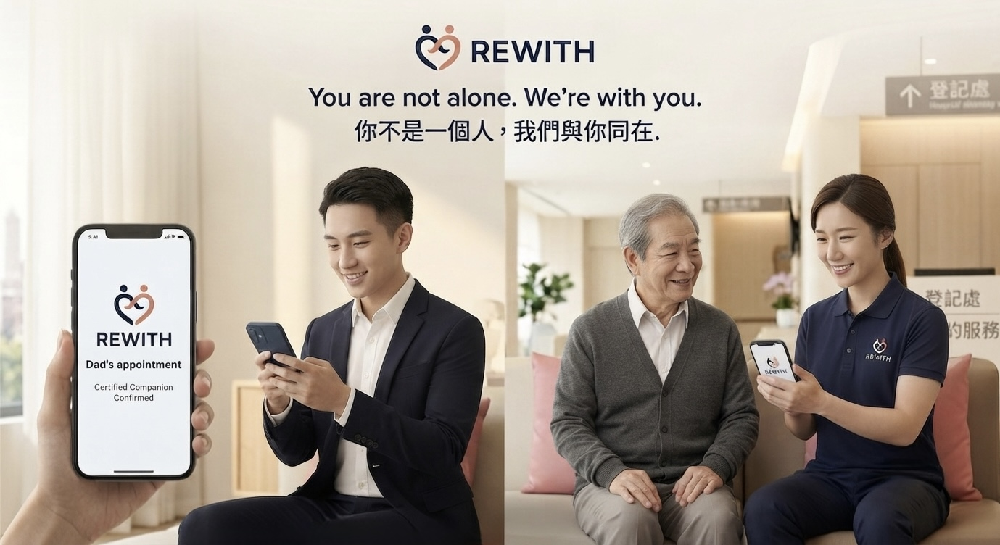

01 · 真實案例
我曾經就是那個需要成年人陪診的人。
我曾經因為預防性的醫療手術，需要接受全身麻醉。
我不需要護理師，也不需要看護。
我只需要一個正常的成年人：陪我到醫院、完成流程、等我恢復，確認我能安全回家。
家人當時各自有醫療問題，有的也人在海外。我不想增加他們的負擔。
最後，我請一位朋友陪我完成。
那如果……沒有這位朋友呢？
這就是 RE WITH 的起點。
這就是 RE WITH 的起點。


我曾經因為預防性的醫療手術，需要接受全身麻醉。
我不需要護理師，也不需要看護。
我只需要一個正常的成年人：陪我到醫院、完成流程、等我恢復，確認我能安全回家。
家人當時各自有醫療問題，有的也人在海外。我不想增加他們的負擔。
最後，我請一位朋友陪我完成。

輸入醫院、日期與需求，找到符合條件的認證陪診員，完成預約與付款。

門診、檢查、候診、交通協助、情緒陪伴。
特定檢查、手術前後、麻醉後返家陪同。
護理師及符合資格的醫事人員，提供更高階服務。
＊陪診員不執行醫療行為。醫療專業人員與一般陪診員完全區隔。
不能每一次都回來，但仍然可以為父母安排一次安心的就醫陪伴。

家庭小型化、子女海外工作、家人分居不同城市，都讓「有人陪著去醫院」成為會反覆發生的需求。
從台北開始驗證服務、回饋與供給密度，再逐步擴張到北北基、全台，最後服務海外家屬市場。
每筆服務交易收取平台服務費。
認證制度＋服務標準＋陪診員網路＋服務紀錄＋媒合系統。
姚妍萱｜Founder of Re-Re
我習慣從真實生活裡看見問題，再把它變成可以被使用的產品與服務。
這一次，我看見的是一個會持續存在的社會需求。
我希望建立的不是一個 App，而是一個讓人需要時，真的找得到人的服務。
這是一項幫助社會的服務，也是一個隨著高齡化、少子化與家庭距離改變，而會持續存在的需求。
你不是一個人，我們與你一起。
Medical Companion Platform